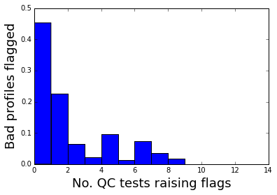

AutoQC
A new python framework for large scale data quality control
 |
the state of open data
- Gov'ts, granting agencies and journals demanding data be released publicly
- NOAA already offering extensive open data services
- Evidence mounting for tremendous scientific gains from sharing data
- But how to make sure open data actually pays off?
- NOAA open data services: https://www.nodc.noaa.gov/submit/index.html
- See for example, Piwowar HA, Vision TJ. (2013) Data reuse and the open data citation advantage. PeerJ 1:e175 https://dx.doi.org/10.7717/peerj.175
IQuOD can lead the scientific community
- Automatic data QC will be necessary for a healthy open data community
- Have the opportunity to build infrastructure to help correctly interpret open data
- Can best succeed at this project via an open source collaboration.
Introducing AutoQC
Challenge:
- Pass or fail ocean profiles based on sanity checks
- ...simple enough?
Problems:
- Prior Art
- Scale & Speed
- Decision Making
Prior Art
- you've already written a ton of sanity checks
- but, they're in C, C++, FORTRAN...
- how do we make it easy to combine past work under one roof?
Modularity First
- AutoQC is 100% plug & play
- AutoQC provides standardized WOD unpacking
- Includes testing framework to ensure code quality
- Allow me to demonstrate...
Introducing wodpy
- supports python 2.7/3.x
- supports numpy & pandas data formats
- highly unit tested for reliability
- open source & available on PyPI
pip install wodpy
Scale & Speed
- quota alone has > 150k profiles
- takes ~24h to run AutoQC without parallelization on this laptop
- how can we run more tests on more data for cheap?
Parallelism First
- AutoQC easy to parallelize
- Factored to record qc results before postprocessing
- Demonstrated on AWS c3.8xLarge cluster:
- 150k profiles analyzed in 30 minutes @ $1.68 USD
Decision Making
- No qc test catches all bad profiles
- All qc tests produce false positives
- Could some qc tests be redundant?
- What is the minimal & optimal combination of qc tests to classify a profile?
AutoQC Performance Testing
- Examine ~150k profiles from NOAA's quota dataset
- AutoQC currently implements the following QC tests:
- Argo_global_range_check
- Argo_gradient_test
- Argo_impossible_date_test
- Argo_impossible_location_test
- Argo_pressure_increasing_test
- Argo_regional_range_test
- Argo_spike_test
- EN_background_check
- EN_constant_value_check
- EN_range_check
- EN_spike_and_step_check
- EN_stability_check
- WOD_gradient_check
- WOD_range_check
'Or' Everything Together
- If we flag a profile when any of the underlying tests do so, we find:
- 54.8% of bad profiles flagged
- 90.4% of good profiles passed
- 45.2% false negative rate
- 9.6% false positive rate

To-Do #1: need more QC tests to eliminate zero-flag spike
EN-Background
Compared to a 54.8% flag rate of or'ing everything together, EN-Background produced
- 49.0% of bad profiles flagged
- 93.4% of good profiles passed
- 51.0% false negative rate
- 6.6% false positive rate